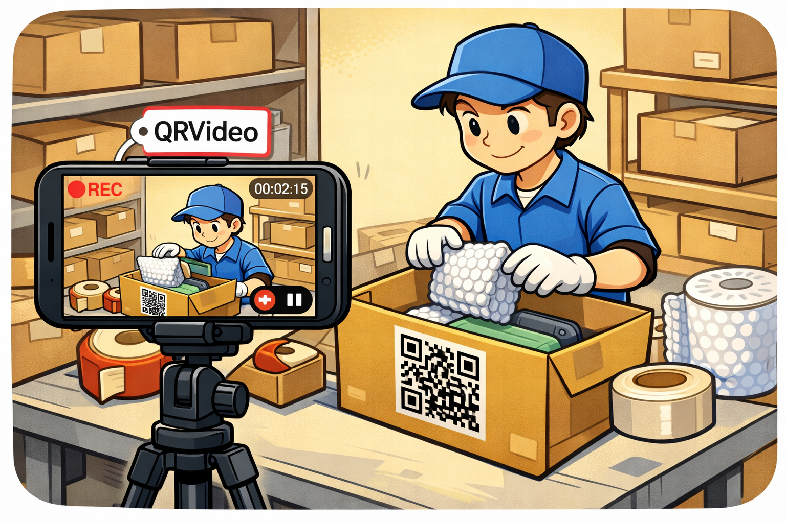

QRVideo
QRVideo
物流包装视频记录的智能解决方案
📦 物流验证
🏷️ 二维码/条形码标签
📹 自动录制
QRVideo是什么?
QRVideo是一个前端网络应用程序,可以有效记录和管理在线购物商城的物流包装过程。

🎯 核心功能
📷 实时录制
通过网络摄像头实时录制物流包装过程。
🏷️ 基于标签的分段
从扫描二维码/条形码到下一个标签自动分段视频。
📹 视频剪辑提取
从所需片段提取和共享视频剪辑。
💾 安全存储
系统地管理所有录制内容,随时访问。
❓ 为什么选择QRVideo?
🛡️ 纠纷解决: 为恶意消费者的索赔提供客观的视频证据。
⏱️ 节省时间: 视频自动保存和组织,无需手动记录。
📊 数据管理: 通过与追踪号关联的元数据进行系统化管理。
📷 摄像头选项卡
通过实时摄像头流监测和录制物流包装过程。
主要功能
- 实时流: 来自网络摄像头的实时视频源
- 录制启动/停止: 一键录制控制
- 二维码/条形码扫描: 标签识别和自动标记
- 信息显示: 当前状态、经过时间、标签信息
📹 演示
使用流程
第一步:准备
连接网络摄像头并验证录制准备就绪
第二步:开始录制
按下"REC"按钮开始录制
第三步:扫描标签
扫描二维码或条形码标记分段
第四步:自动分段
下一个标签的分段自动分割
📹 视频选项卡
搜索、播放和下载基于标签分段的视频剪辑。
视频管理功能
- 剪辑列表: 在列表中显示所有录制的视频剪辑
- 搜索过滤: 按日期、追踪号、标签搜索
- 播放: 直接在浏览器中播放视频
- 下载: 将剪辑本地保存
- 分享: 生成剪辑链接进行分享
- 删除: 删除不需要的剪辑以释放存储空间
视频信息
- 视频长度
- 创建日期和时间
- 文件大小
- 相关标签信息
- 播放次数
⚙️ 设置选项卡
个性化和优化QRVideo的运行方式。
录制设置
- 分辨率: 从720p、1080p、2K中选择
- 帧率: 24fps、30fps、60fps
- 比特率: 低、中、高品质设置
- 自动录制: 检测到网络摄像头时自动启动
存储设置
- 保存位置: 本地保存或云同步
- 自动备份: 设置定期备份
- 存储管理: 自动删除旧文件规则
- 加密: 已保存文件的加密选项
用户档案
- 姓名: 输入操作员姓名
- 团队/部门: 组织信息
- ID/账户: 操作员标识信息
- 语言: 韩语、英语、中文等
- 深色模式: 用户界面主题设置
通知设置
- 录制错误通知
- 低存储空间警告
- 大文件删除确认
💡 使用案例
了解QRVideo如何在实际物流现场使用。
📌 案例1:处理恶意消费者
情况: 消费者声称"包装到达时损坏"
解决方案: 使用QRVideo记录的包装视频证明发货前的状态
解决方案: 使用QRVideo记录的包装视频证明发货前的状态
📌 案例2:优化物流流程
情况: 确定某些产品包装时间过长
解决方案: 分析分段视频以找到瓶颈并改进
解决方案: 分析分段视频以找到瓶颈并改进
📌 案例3:员工培训
情况: 验证新员工的包装方法
解决方案: 通过实际包装视频进行实时反馈和改进
解决方案: 通过实际包装视频进行实时反馈和改进
📌 案例4:质量管理
情况: 保持按产品包装标准的一致性
解决方案: 记录所有包装过程以保持标准化
解决方案: 记录所有包装过程以保持标准化
🎯 预期效果
- ✅ 物流索赔减少50%
- ✅ 包装时间缩短15-20%
- ✅ 员工培训效率提高30%
- ✅ 提升客户信任度